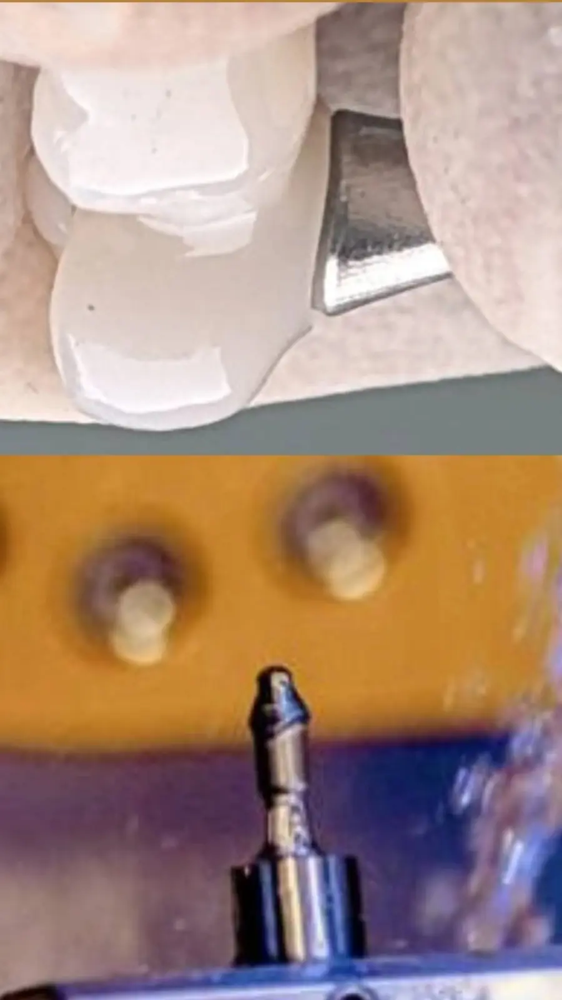

نسخه استخراجشده؛ ترجمه یا تأیید علمی انجام نشده است. وضعیت: captured
روکش ایمپلنتی را روی اباتمنت امتحان میکنی و کامل نمینشیند؛ در ناحیهی مارجین گپ دیده میشود. اباتمنت از نوع Premill است و با سیستم CAD/CAM ساخته شده. مشکل از روکش است یا از خود اباتمنت؟

برای جواب باید بدانی اباتمنت Premill چطور میل میشود. برای میلینگ این قطعه معمولاً دو روش اتصال به دستگاه وجود دارد.
این تفاوتی کارگاهی است، ولی ردپایش تا کلینیک میآید.
نکتهی مهم این است که اگر محل اتصال اسپرو کاملاً صاف و تمیز نشود، حتی یک برجستگی بسیار کوچک، در حدی که به چشم نیاید، میتواند بین سطح داخلی روکش و اباتمنت بنشیند و مانع نشست کامل روکش روی اباتمنت شود.
روکش ایمپلنتی روی اباتمنت بهطور کامل نمینشست و در ناحیهی مارجین گپ دیده میشد. پس از بررسی مشخص شد محل اتصال اسپرو در اباتمنت بهطور کامل صاف نشده و مقدار بسیار کمی از آن باقی مانده بود. همین برجستگی کوچک باعث شده بود روکش نتواند بهطور کامل روی اباتمنت بنشیند.
نتیجهی بالینی، گپ مارجینالی است که ظاهراً «تقصیر روکش» است، ولی منشأش روی اباتمنت است.